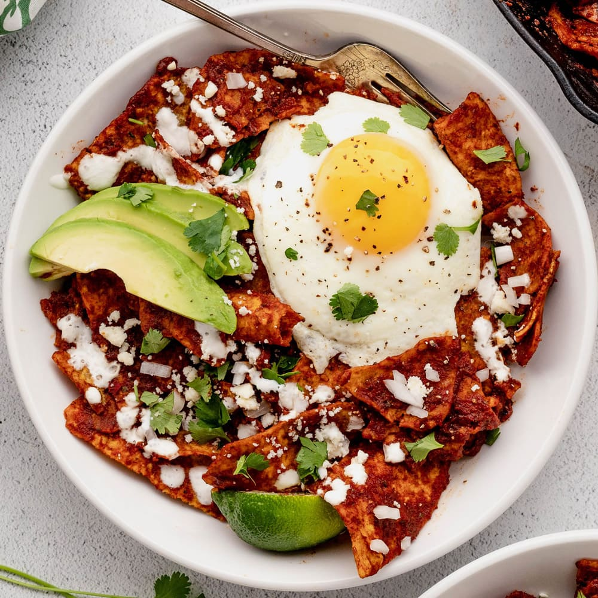

Chilaquiles are, at their most basic, an assembly of fried tortilla pieces drenched in chili sauce with optional meat and vegetables. The dish is popular both in Mexico and the United States as a great way to use up leftover, stale tortillas. The name of the dish is derived from chil-a-quilitl, meaning greens or herbs in a chili broth.
Meal prep time : 15 minutes
Servings : 4